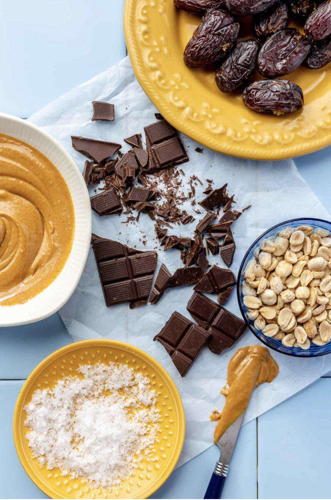
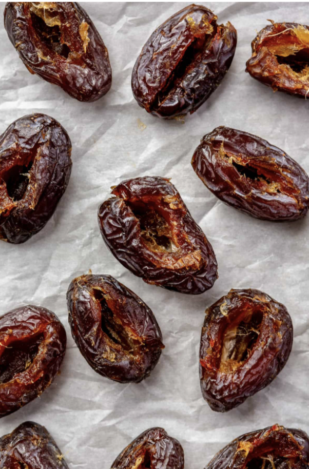
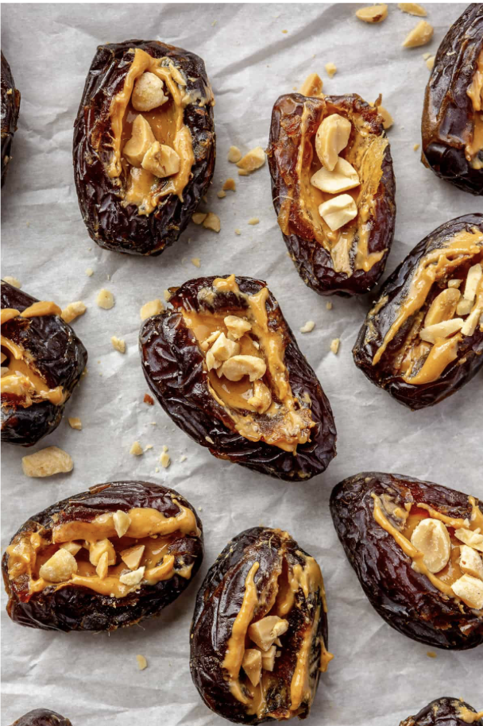
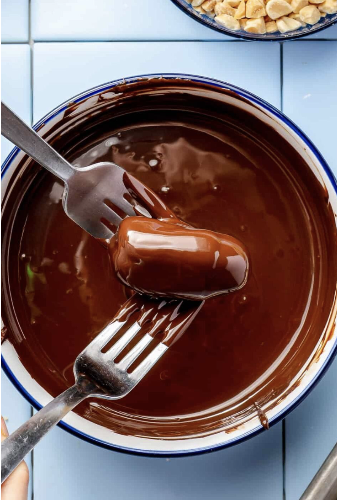
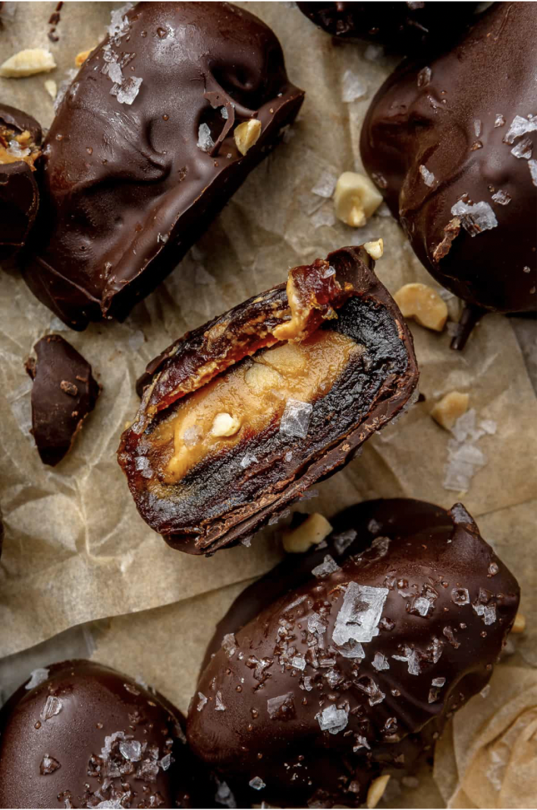

If you need convincing to try out healthier dessert recipes, let this 5-ingredient Snickers-inspired treat be the one!

Slice each Medjool date lengthwise and carefully remove the pit without cutting the date all the way through.

Fill each date with peanut butter and press chopped roasted peanuts into the filling for added crunch.

Melt the dark chocolate and dip each stuffed date until fully coated. Sprinkle lightly with sea salt before the chocolate sets.

Let the chocolate harden completely, then enjoy your homemade Date Snickers as a healthier dessert option.
